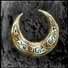
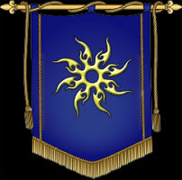
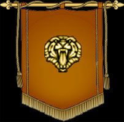

l existe deux niveaux de groupement des seigneuries. La plus petite entité est le clan qui est un regroupement de seigneurs. Ensuite vient le royaume qui est le regroupement de clans. Voici les caractéristiques en détail.

Le clan est un regroupement d'un maximum de 10 seigneuries Le clan devra voter pour élire un chef de clan. Le chef de clan pourra défier d'autre clan du royaume afin de déterminer quel clan sera considérer comme dominant et qui aura la chance de diriger le royaume (ensemble de tous les clans du royaume).
Les chefs de clan sont des seigneur qui sont nommé par les autres membre du même clan. Pour élire un chef, celui-ci doit recevoir de l'or en appui à sa candidature. Cette opération s'effectue à la place publique. Plus un chef a d'or en appui à sa candidature, plus cela démontre un attachement de ses seigneurs envers sa manière de gérer les affaires du clan. Pour être élu, un seigneur doit recevoir l'appui de trois seigneurs différents. Donc le chefélu est celui qui a le plus d'or en appui à sa candidature parmi les seigneurs ayant un triple appui.
Les avantages d'être chef sont nombreux. En plus d'avoir quelques bonus supplémentaires (voir plus bas), il possède des options unique, dont voici les principale.
La gestion des réserves du royaume (or, bois, nourriture). La mise au donjon d'un seigneur récalcitrant. Gérer la messagerie interne du royaume. Lancer le sort stocké dans la sphère des nobles sur le clan d'un royaume ennemi de son choix. Nommer un duc pour l'aider dans la gestion de la messagerie interne. Personnaliser les options du clan (nom, message général).
Les réserves du clan est l'endroit le plus sécuritaire qu'on puisse trouver afin d'accumuler des ressources. Cet endroit est inaccessible aux voleurs. Les seigneurs peuvent envoyer leurs surplus de ressources (or, bois, nourriture) dans une des réserves du clan. Le chef a la possibilité de redistribuer ses ressources à ses seigneurs quand le besoin se fait sentir. De plus, l'or envoyé au chef pour appuyer sa candidature est automatiquement transféré dans la réserve du clan.
La récupération des voleurs
La récupération du mage

Un royaume est le regroupement de clans. En fonction des critères sélectionnés lors de l'inscription, un seigneur aura accès à certain royaume et se verra refusé l'accès à d'autre. Seul les royaumes peuvent se lancer dans une guerre contre un autre royaume. Il y a la possibilité de choisir entre 4 royaumes différents. Chacun des royaumes a des restrictions au niveau des races qui peuvent s'y joindre et chacun offre un bonus de royaume différent.

Royaume du Soleil (1)
Race: Amazone, centaure, elf des bois, elf noble, génie, hobbit, humain, nain.
Bonus: +1 défense à l'éliteRoyaume de la licorne (2)
Race: Amazone, cyclope, elf des bois, elf noble, elf noir, génie, gobelin, hobbit, humain, lycans, malea, mort-vivant, orc.
Bonus: +1 attaque aux chevaux.Royaume sombre (3)
Race: cyclope, elf noir, gargouille, gobelin, lycan, malea, mort-vivant, orc.
Bonus: +1 d'attaque à l'élite
Royaume du tigre (4)
Race: Amazone, centaure, cyclope, elf des bois, elf noble, elf noir, gargouille, génie, gobelin, hobbit, humain, lycans, mort-vivant, nain, orc.
Bonus: +5% en revenu d'or, possibilité de vendre bois et nourriture contre de l'or et 1 jour de retour de moins.
Les royaumes doivent avoir un roi. Le roi n'est pas élu. Le roi se trouve à être le chef du clan dominant du royaume. Pour établir la dominance d'un clan, le chef de clan doit entrer en conflit (voir desciption plus bas) avec d'autre clan de sont royaume afin de prouver sa dominance. Une fois la dominance déterminé le chef du clan dominant se voit nommer roi. La tâche principale du roi est de s'occuper des relations diplomatiques avec les autres royaumes. Pour ce faire, Le roi a la possiblilité de déclarer des guerres. Ces actions devraient être entreprisent avec l'appui des clans.
Les avantages d'être roi sont nombreux. Il possède des options unique, dont voici les principale
Déclarer la guerre à un autre royaume. Payer un tribu pour éviter une guerre. Personnaliser les options du royaume (nom, message général).


La
période de paix |
|
| C'est la période qui devrait être la plus courante dans le monde de Hainyah. Durant cette période, les seigneuries du royaume sont susceptibles de subir des attaques de n'importe quel autre seigneurie, peut importe son royaume. | |
C'est la période durant laquelle deux clans d'un même royaume déterminera qui en ressortira comme clan dominant. Les conflits de pouvoir ont une durée fixe de 72 jours hainyien. Chacun des clans aura la possibilité de lancer un conflit de pouvoir contre un autre clan de sont royaume. Chaque victoire déterminera qui en ressortira comme le clan dominant. Le clan réussisant à établir sa dominance contre le plus grand nombre de clan de sont royaume se verra attribuer le rôle de clan dominant et son chef deviendra le roi du royaume. Objectifs:
|
|||||||||||||
| Durant cette période de 30 jours, les seigneuries sont appelées à se préparer pour la guerre. C'est le temps d'améliorer ses défenses car vos troupes seront seront surement misent à l'épreuve. Aucune isolation avec le reste de monde durant cette brève période. | |
La
période de guerre |
|||||||||||||||||
Durant cette période, les attaques sont beaucoup plus fréquentes et les gains en acres plus importants. Les voleurs et les mages font aussi beaucoup plus de dégats. Il est possible de faire des opérations et des attaques seulement contre le royaume avec lequel on est en guerre. La durée d'une guerre dépend de la grosseur des royaumes concernés. La guerre se termine au jour de l'échéance ou lorsqu'un royaume a atteint tous ses objectifs de guerre. Les dieux donnent des acres supplémentaires en cadeau pour les attaques réussies en guerre. La victoire à une guerre vous donne des avantages. Vous recevrez une combinaison des cadeaux suivants; acres, bois, nourriture, or, points de science, armures, points pour la sphère des nobles, réputation de voleur et expérience pour le mage. Chaque guerre procurera des combinaisons de gain différent. Points de commandement: Objectifs de guerre:
|
|||||||||||||||||
| Durant cette période, d'une durée de 30 jours, l'isolation entre les deux royaumes est maintenue mais les opérations de voleurs et mages sont moins efficaces. | |
La
période de paix divine |
|
| Période de paix où il est impossible de se faire déclarer une guerre. Chaque royaume a accès à une seule période de ce genre et celle ci dure 36 heures. Durant cette période la production d'or est augmenté de 25% pour toutes les seigneuries. Pour pouvoir bénéficier de ce bonus, il faut avoir été dans ce royaume lors de la déclaration de cette période. Ceux qui arrivent d'exode, ne verront pas leur production augmenter. La paix divine empêche la guerre mais n'empêche pas de recevoir ou de lancer des attaques traditionnelles. | |